Transpiler¶
The generate_boxing_pass_manager() function is a flexible and convenient tool to
build a qiskit.transpiler.PassManager able to group the circuit instructions into annotated boxes.
Whether you want to automate your workflow, you are interested in trying different boxing strategies for your
circuits, or you simply want a quick and easy alternative to grouping and annotating by hand,
generate_boxing_pass_manager() can help you achieve your goals.
This guide illustrates how to use generate_boxing_pass_manager() and its arguments.
To highlight the effects of each of the function’s arguments, in the sections that follow we will mainly target
the circuit below.
from qiskit.circuit import Parameter, QuantumCircuit
circuit = QuantumCircuit(4, 7)
circuit.h(1)
circuit.h(2)
circuit.cz(1, 2)
circuit.h(1)
circuit.cx(1, 0)
circuit.cx(2, 3)
circuit.measure(range(1, 4), range(3))
circuit.cx(0, 1)
circuit.cx(1, 2)
circuit.cx(2, 3)
for qubit in range(4):
circuit.rz(Parameter(f"th_{qubit}"), qubit)
circuit.rx(Parameter(f"phi_{qubit}"), qubit)
circuit.rz(Parameter(f"lam_{qubit}"), qubit)
circuit.measure(range(4), range(3, 7))
circuit.draw("mpl", scale=0.8)
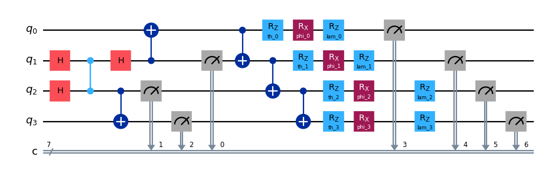
Group operations into boxes¶
The argument enable_gates can be set to True or False to specify whether the two-qubit gates should be grouped into
boxes. Similarly, enable_measures allows specifying whether or not measurements should be grouped. The following
snippet shows an example where both gates and measurements are grouped.
from samplomatic.transpiler import generate_boxing_pass_manager
boxing_pass_manager = generate_boxing_pass_manager(
enable_gates=True,
enable_measures=True,
)
transpiled_circuit = boxing_pass_manager.run(circuit)
transpiled_circuit.draw("mpl", scale=0.8)
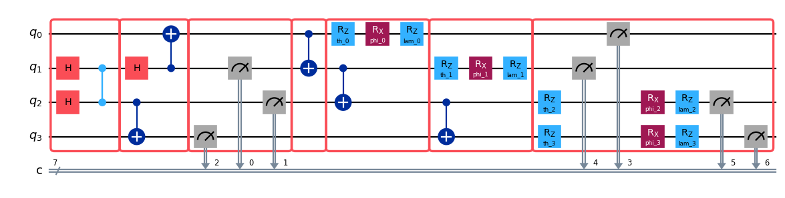
As can be seen in the figure, the pass manager creates boxes of two types: those that contain a single layer of two-qubit gates, and those that contain a single layer of measurements. This separation reflects standard practices in noise learning and mitigation protocols, which usually target layers of homogeneous operations. The two-qubit gates and measurements are placed in the leftmost box that can accommodate them, and every single-qubit gates is placed in the same box as the two-qubit gate or measurement they preceed.
The following snippet shows another example where enable_gates is set to False. As can be seen, the two-qubit
gates are not grouped into boxes, nor are the single-qubit gates that preceed them.
boxing_pass_manager = generate_boxing_pass_manager(
enable_gates=False,
enable_measures=True,
)
transpiled_circuit = boxing_pass_manager.run(circuit)
transpiled_circuit.draw("mpl", scale=0.8)
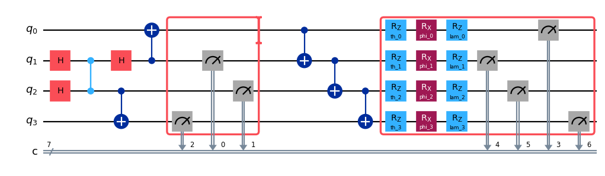
Choose how to annotate your boxes¶
All the two-qubit gates and measurement boxes in the returned circuit own left-dressed annotations. In particular,
all the boxes that contain two-qubit gates are annotated with a Twirl, while for measurement boxes, users can
choose between Twirl, BasisTranform (with mode aset to "measure"), or both. The following code
generates a circuit where the all the boxes are twirled, and the measurement boxes are additionally annotated with
BasisTranform.
boxing_pass_manager = generate_boxing_pass_manager(
enable_gates=True,
enable_measures=True,
measure_annotations="all",
)
transpiled_circuit = boxing_pass_manager.run(circuit)
Prepare your circuit for noise injection¶
The inject_noise_targets allows specifying what boxes should receive an InjectNoise annotation. As an example,
the following snippet generates a circuit where the two-qubit gates boxes own an InjectNoise annotation but the
measurement boxes do not.
boxing_pass_manager = generate_boxing_pass_manager(
enable_gates=True,
enable_measures=True,
inject_noise_targets="gates",
)
transpiled_circuit = boxing_pass_manager.run(circuit)
If a circuit contains two or more boxes that are equivalent up to single-qubit gates, all of them are annotated with
an InjectNoise annotation with the same ref. Thus, the number of unique refs in the returned
circuit is equal to the number of unique boxes, with uniqueness defined up to single-qubit gates.
By selecting the appropriate value for inject_noise_strategy, users can decide whether the InjectNoise annotations
should have:
modifier_ref='', recommended when modifying the noise maps prior to sampling from them is not required,modifier_ref=ref, recommended when all the noise maps need to be scaled uniformly by the same factor, ora unique value of
modifier_ref, recommended when every noise map needs to be scaled by a different factor.
The following code generates a circuit where the two-qubit gates boxes own an InjectNoise annotation with unique
values of modifier_ref.
boxing_pass_manager = generate_boxing_pass_manager(
enable_gates=True,
enable_measures=True,
inject_noise_targets="gates",
inject_noise_strategy="individual_modification",
)
transpiled_circuit = boxing_pass_manager.run(circuit)
Select a twirling strategy¶
The boxing pass manager begins by choosing which entangling gates and measurement instructions should appear in the same boxes.
Once this is accomplished, boxes will not, in general, be full-width—they will likely include only a subset of the qubits that are active in the circuit or present in the backend target.
In typical configurations of the boxing pass manager, since all qubits a box instruction acts on are twirled (even those for which no instruction inside the box act on), having partial-width boxes affects the noise-tailoring effects of twirling; the idling qubits are not twirled and can, for example, build up coherent errors while the box is applied.
The twirling_strategy provides options for extending the qubits owned by each box, thereby modifying the number of idling qubits:
"active"(default) does not extend the boxes to any idling qubits."active_accum"extends all boxes to those qubits that have already been acted on by some prior instruction in the circuit. This is useful if you want to leave qubits at the start of the circuit in their ground state for as long as possible by not twirling them until they become active."active_circuit"extends all boxes to those qubits that are acted on by any instruction in the entire circuit. This is useful if you have a structured circuit with repeated entangling layers and you want to minimize the number of unique boxes because each one will need to have its noise learned."all"extends all boxes to all qubits in all quantum registers of the circuit. This is useful as an extension to"active_circuit"where you want all qubits in the QPU to always be twirled.
To demonstrate, we apply each of the strategies to our base circuit and draw the resulting outcomes.
circuit = QuantumCircuit(5, 2)
circuit.h(range(4))
circuit.cx(0, 1)
circuit.cx(1, 2)
circuit.cx(2, 3)
circuit.cx(0, 1)
circuit.cx(1, 2)
circuit.cx(2, 3)
circuit.barrier()
circuit.h(range(4))
circuit.measure([1, 2], [0, 1])
circuit.draw("mpl", scale=0.6)
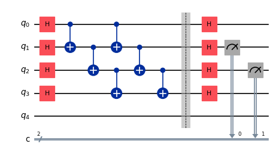
import matplotlib.pyplot as plt
plt.figure(figsize=(9, 6))
for idx, strategy in enumerate(["active", "active_accum", "active_circuit", "all"]):
ax = plt.subplot(2, 2, idx + 1)
pm = generate_boxing_pass_manager(twirling_strategy=strategy, remove_barriers="never")
transpiled_circuit = pm.run(circuit)
fig = transpiled_circuit.draw("mpl", scale=0.8, ax=ax)
ax.set_title(f"twirling_strategy='{strategy}'")
plt.tight_layout()
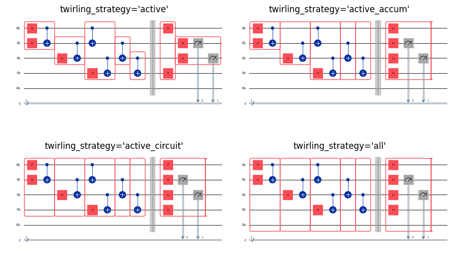
Specify how to treat barriers¶
By default, barriers are removed from the circuit after all entangling gates and measurement instructions have been boxed as instructed, including their extensions due to the twirling_strategy selection, but prior to single-qubit gates being added to the box immediately on their right, if possible.
For example, if we start with the following circuit that contains a barrier:
circuit_with_barrier = QuantumCircuit(4)
circuit_with_barrier.h(range(4))
circuit_with_barrier.cz(0, 1)
circuit_with_barrier.barrier()
circuit_with_barrier.cz(2, 3)
circuit_with_barrier.measure_all()
circuit_with_barrier.draw("mpl", scale=0.8)
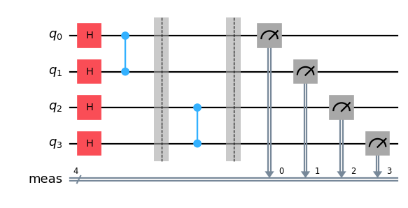
Then the default behaviour will prevent the two entangling gates from ending up in the same box, though it will let the single-qubit gates be absorbed into the next available box despite the barrier.
boxing_pass_manager = generate_boxing_pass_manager()
transpiled_circuit = boxing_pass_manager.run(circuit_with_barrier)
transpiled_circuit.draw("mpl", scale=0.8)
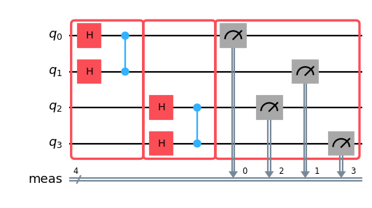
Setting remove_barriers to 'never' preserves the barriers so that single-qubit gates are constrained.
boxing_pass_manager = generate_boxing_pass_manager(remove_barriers="never")
transpiled_circuit = boxing_pass_manager.run(circuit_with_barrier)
transpiled_circuit.draw("mpl", scale=0.8)
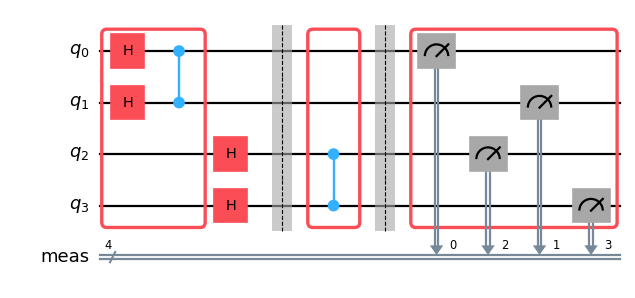
And finally, if we elect to remove the barriers immediately, then the entanglers are no longer constrained to end up in separate boxes.
boxing_pass_manager = generate_boxing_pass_manager(remove_barriers="immediately")
transpiled_circuit = boxing_pass_manager.run(circuit_with_barrier)
transpiled_circuit.draw("mpl", scale=0.8)
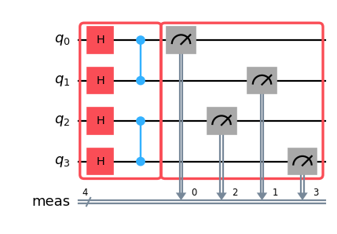
How stratification works¶
The boxing pass manager runs two key passes in sequence:
GroupGatesIntoBoxes— stratifies entangling gates into boxes. Single-qubit gates are ignored entirely at this stage; only two-qubit gates are grouped.AbsorbSingleQubitGates— absorbs each single-qubit gate into the nearest eligible box to its right.
During stratification, GroupGatesIntoBoxes traverses the circuit DAG in topological order and places each two-qubit gate in the earliest group whose qubits are not yet occupied. Three kinds of instructions act as delimiters that flush the current group for their qubits, forcing subsequent gates on those qubits into a new group:
Barriers
Existing box instructions
Measurements
Single-qubit gates are not delimiters — they have no effect on grouping and are left for AbsorbSingleQubitGates to handle. No commutativity analysis is currently performed; the grouping respects the topological order of the circuit as-is.
Why remove_barriers="after_stratification" is the recommended default¶
The default "after_stratification" mode is chosen because it combines two benefits:
Barriers constrain how entangling gates are grouped (they act as delimiters during stratification).
Barriers are removed before
AbsorbSingleQubitGatesruns, so single-qubit gates can still flow across former barrier positions and be absorbed into the nearest box.
By contrast:
"never"keeps barriers throughout, which traps single-qubit gates between a barrier and a box, preventing their absorption and leaving untwirled rotations in the circuit."immediately"removes barriers before stratification, so they have no effect on grouping at all."finally"is useful when you want barriers in the output circuit (e.g., for visualization), but be aware that single-qubit gates between a barrier and a box will not be absorbed.
Boxing ISA circuits with barriers¶
Circuits with a repeated structure—Trotterized Hamiltonian simulations, variational ansatze, error amplification sequences—are typically built programmatically and then transpiled to ISA form. Manually adding boxes to an already-transpiled circuit is cumbersome, so the natural workflow is:
Build the logical circuit, inserting barriers at the layer boundaries you want to become box boundaries.
Transpile to ISA. Qiskit’s transpiler preserves barriers through routing and optimization.
Run
generate_boxing_pass_manager()on the ISA circuit.
Barriers are needed when the end of one layer does not cover all qubits: the greedy algorithm would otherwise place gates from the next layer—on those “free” qubits—into the same group. As a concrete example, consider a two-step Heisenberg ZZ simulation on a 5-qubit ring. Each Trotter step has three bond layers: even bonds (0,1), (2,3), odd bonds (1,2), (3,4), and the wrap bond (4,0). After the odd-bond layer, qubits 0 and 4 are both free. Without a barrier, the wrap bond (4,0) gets greedy-grouped with bonds from the next Trotter step that use those free qubits, mixing gates from different steps in the same box.
from qiskit.circuit import Parameter, QuantumCircuit
n = 5 # 5-qubit ring: bonds (0,1), (1,2), (2,3), (3,4), (4,0)
dt = Parameter("dt")
heisenberg = QuantumCircuit(n)
for step in range(2):
# Layer 1: even bonds (0,1) and (2,3)
for idx in range(0, n - 1, 2):
heisenberg.rzz(dt, idx, idx + 1)
heisenberg.barrier()
# Layer 2: odd bonds (1,2) and (3,4) -- qubits 0 and 4 are now free
for idx in range(1, n - 1, 2):
heisenberg.rzz(dt, idx, idx + 1)
heisenberg.barrier()
# Layer 3: wrap bond (4,0) -- both qubits were free after layer 2
heisenberg.rzz(dt, n - 1, 0)
if step < 1:
heisenberg.barrier() # separates the two Trotter steps
heisenberg.measure_all()
heisenberg.draw("mpl", scale=0.7)
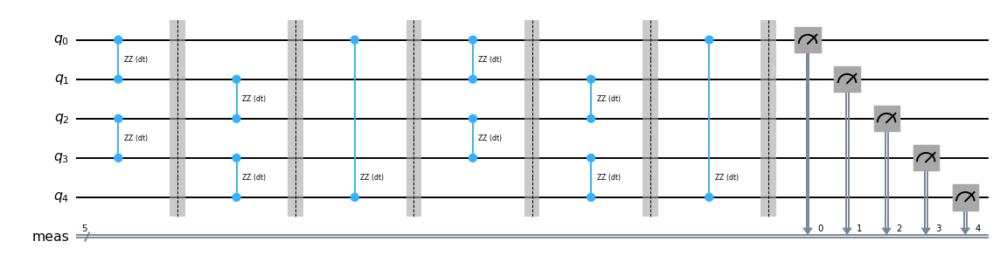
We transpile to ISA form, assuming the underlying device has CX as the native entangler. Note that the barriers survive transpilation and remain visible in the output circuit.
from qiskit.transpiler import generate_preset_pass_manager
preset_pm = generate_preset_pass_manager(
basis_gates=["rz", "sx", "cx"],
coupling_map=[[0, 1], [1, 2], [2, 3], [3, 4], [4, 0]],
optimization_level=1,
)
isa_circuit = preset_pm.run(heisenberg)
isa_circuit.draw("mpl", scale=0.5, fold=200)
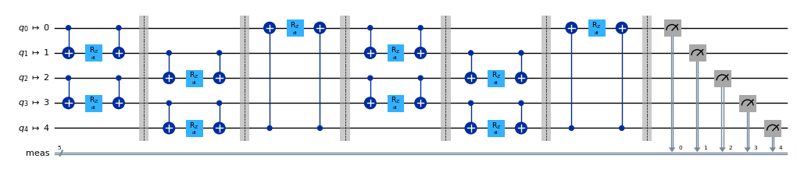
Now we apply the boxing pass manager to the ISA circuit. Each of the three bond layers becomes a separate box in each Trotter step.
boxing_pm = generate_boxing_pass_manager()
boxed_isa = boxing_pm.run(isa_circuit)
boxed_isa.draw("mpl", scale=0.5, fold=100)
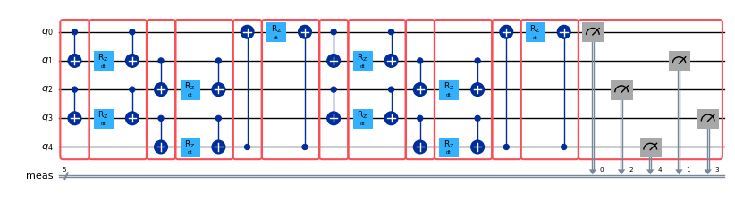
Incorporate Samplomatic’s pass manager into Qiskit’s preset pass managers¶
The code below shows how to incorporate generate_boxing_pass_manager() into one of Qiskit’s preset pass managers. The transpiled circuit is ISA and contains boxes.
from qiskit.transpiler import generate_preset_pass_manager
preset_pass_manager = generate_preset_pass_manager(
basis_gates=["rz", "sx", "cx"],
coupling_map=[[0, 1], [1, 2]],
optimization_level=0,
)
boxing_pass_manager = generate_boxing_pass_manager()
# Run the boxing pass manager after the scheduling stage
preset_pass_manager.post_scheduling = boxing_pass_manager
circuit = QuantumCircuit(3)
circuit.h(0)
circuit.cx(0, 1)
circuit.cx(0, 2)
circuit.measure_all()
transpiled_circuit = preset_pass_manager.run(circuit)
transpiled_circuit.draw("mpl", scale=0.8)
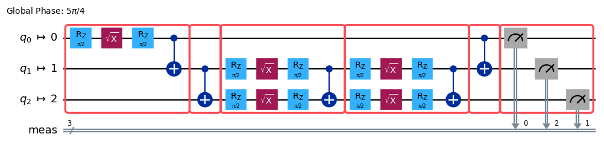
This pattern also combines naturally with the barrier-based ISA boxing workflow. The boxing pass manager runs as a post-scheduling step, after barriers from the original logical circuit have survived transpilation, so they guide stratification exactly as expected.
preset_pm = generate_preset_pass_manager(
basis_gates=["rz", "sx", "cx"],
coupling_map=[[0, 1], [1, 2], [2, 3], [3, 4], [4, 0]],
optimization_level=1,
)
preset_pm.post_scheduling = generate_boxing_pass_manager()
boxed_heisenberg = preset_pm.run(heisenberg)
boxed_heisenberg.draw("mpl", scale=0.5, fold=100)
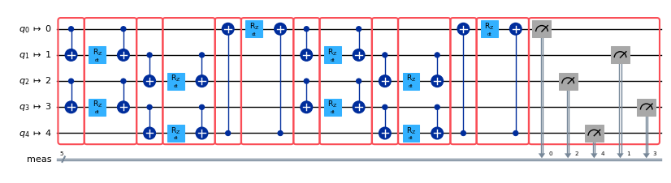
Inspecting and modifying annotations¶
After auto-boxing, you may want to inspect the annotations on specific boxes or adjust them—for example, to add noise injection to select boxes, remove annotations from some boxes, or change the twirling group. Samplomatic provides a set of utility functions in samplomatic.utils for this purpose. All of them return a new circuit without modifying the original.
extend_annotations() appends one or more annotations to every box in the circuit.
from samplomatic import InjectNoise, Twirl
from samplomatic.utils import extend_annotations
boxed = generate_boxing_pass_manager().run(circuit_with_barrier)
# Add InjectNoise to every box
with_noise = extend_annotations(boxed, InjectNoise("my_noise_ref"))
with_noise.draw("mpl", scale=0.8)
filter_annotations() keeps only annotations of specified types, removing the rest. replace_annotations() applies a callable to each annotation; the callable returns a list of annotations to substitute in its place (return [] to remove, a single-element list to replace, or a multi-element list to expand).
from samplomatic.utils import filter_annotations, replace_annotations
# Keep only Twirl annotations, drop everything else
twirl_only = filter_annotations(with_noise, Twirl)
# Replace the twirling group on every Twirl annotation
updated = replace_annotations(
twirl_only, lambda a: [Twirl(group="local_c1")] if isinstance(a, Twirl) else [a]
)
The general-purpose map_annotations() function accepts any callable mapping a list of annotations to a new list, giving you full control over per-box transformations. strip_annotations() is a convenience wrapper that removes all annotations from every box.
For bulk changes like adding InjectNoise to all gate boxes, the inject_noise_targets parameter of generate_boxing_pass_manager() is still the most concise option. These utilities are most useful for selective per-box edits that the pass manager parameters do not cover.
Build your circuit¶
Every pass manager produced by generate_boxing_pass_manager() returns
circuits that can be successfully turned into a template/samplex pair by build(). As an
example, the following code calls the build() function on a circuit produced by a boxing pass
manager.
from samplomatic import build
boxing_pass_manager = generate_boxing_pass_manager(
enable_gates=True,
enable_measures=True,
)
transpiled_circuit = boxing_pass_manager.run(circuit)
template, samplex = build(transpiled_circuit)
In order to ensure that any transpiled circuit can be successfully built, the pass managers know how to
include additional boxes when they are needed. As an example, consider the circuit below, which ends with an
unmeasured qubit 0.
circuit_with_unmeasured_qubit = QuantumCircuit(4, 3)
circuit_with_unmeasured_qubit.cz(0, 1)
circuit_with_unmeasured_qubit.cz(2, 3)
for qubit in range(4):
circuit_with_unmeasured_qubit.rz(Parameter(f"th_{qubit}"), qubit)
circuit_with_unmeasured_qubit.rx(Parameter(f"phi_{qubit}"), qubit)
circuit_with_unmeasured_qubit.rz(Parameter(f"lam_{qubit}"), qubit)
circuit_with_unmeasured_qubit.measure(range(1, 4), range(3))
circuit_with_unmeasured_qubit.draw("mpl", scale=0.8)
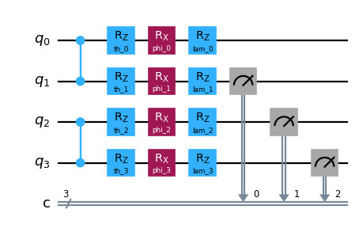
Drawing left-dressed boxes around the gates and the measurements would result in a circuit that has uncollected
virtual gates on qubit 0, and calling build() on this circuit would result in an error. To
avoid this, the pass managers returned by generate_boxing_pass_manager() are allowed
to add right-dressed boxes to act as collectors. As an example, in the following snippet qubit 0 is
terminated by a right-dressed box that picks up the uncollected virtual gate. The single-qubit gates acting on qubit
0 are also placed inside the box, in order to minimise the depth of the resulting circuit.
boxing_pass_manager = generate_boxing_pass_manager(
enable_gates=True,
enable_measures=True,
)
transpiled_circuit = boxing_pass_manager.run(circuit_with_unmeasured_qubit)
transpiled_circuit.draw("mpl", scale=0.8)
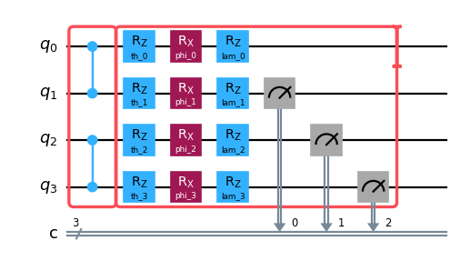
In another example, a right-dressed box is added to collect the virtual gates that would otherwise remain uncollected due to the unboxed measurements.
boxing_pass_manager = generate_boxing_pass_manager(
enable_gates=True,
enable_measures=False,
)
transpiled_circuit = boxing_pass_manager.run(circuit_with_unmeasured_qubit)
transpiled_circuit.draw("mpl", scale=0.8)
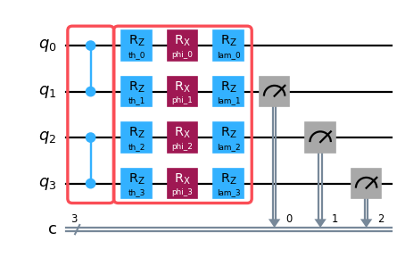